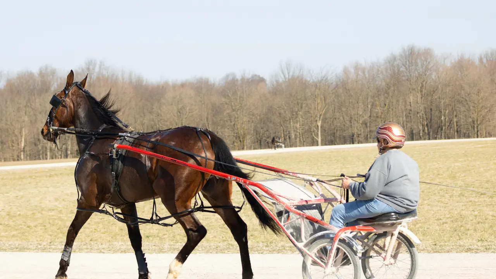

Vous cherchez le pronostic Quinté du jour avant la course ? Avant de regarder uniquement les numéros ou les chevaux les plus joués, prenez quelques minutes pour étudier les principaux éléments de la course.
La forme récente, la distance, le parcours, l'hippodrome, le poids et les conditions de course peuvent apporter des informations intéressantes. En les mettant en perspective, vous obtenez une vision plus complète des chances de chaque partant.
Sur BravoQuinte, nous cherchons justement à réunir ces informations pour vous aider à mieux comprendre la course et à construire votre propre sélection. Un pronostic reste toutefois une analyse. Il ne peut pas garantir le résultat d'une course, car les aléas de la compétition peuvent toujours modifier le scénario prévu.
Voici les principaux points à regarder pour préparer votre Quinté du jour.
La première chose à regarder concerne les dernières sorties.
Les cinq dernières courses peuvent déjà donner une bonne idée de la régularité d'un cheval. Mais attention à ne pas vous arrêter au classement brut.
Une sixième place peut cacher une bonne performance si le cheval a subi un mauvais parcours. À l'inverse, une deuxième place peut avoir été obtenue dans des circonstances particulièrement favorables.
Pour analyser correctement les dernières performances, regardez notamment :
Cette lecture permet de mieux comprendre la forme actuelle du cheval plutôt que de se contenter d'un simple chiffre.
La distance joue également un rôle important.
Tous les chevaux ne possèdent pas les mêmes qualités. Certains sont plus à l'aise sur les parcours courts, tandis que d'autres donnent leur meilleur rendement sur des distances intermédiaires ou longues.
Il est donc intéressant de comparer la distance du Quinté du jour avec les distances sur lesquelles chaque cheval a déjà obtenu de bons résultats.
Un cheval performant sur 2 000 mètres ne sera pas forcément aussi à l'aise sur 3 000 mètres.
Avant de retenir un partant, vérifiez donc ses références sur une distance similaire.
Le lieu de la course mérite aussi votre attention.
Chaque hippodrome possède ses propres caractéristiques. La longueur de la ligne droite, les virages, la configuration du parcours ou encore la position dans les stalles peuvent influencer le déroulement d'une épreuve.
Un cheval peut ainsi afficher de bonnes performances sur un hippodrome et être moins performant ailleurs.
Lorsque vous préparez votre analyse Quinté, recherchez donc les performances déjà réalisées sur le même parcours ou sur une piste présentant des caractéristiques comparables.
Selon la discipline, le jockey ou le driver constitue également une donnée à prendre en compte.
Vous pouvez notamment regarder :
Une association déjà performante peut renforcer l'intérêt d'un cheval dans une sélection.
Dans certaines épreuves, le poids peut avoir une influence importante.
Il faut donc comparer la situation actuelle du cheval avec celle qu'il connaissait lors de ses meilleures performances.
Un cheval qui retrouve des conditions proches de celles d'une précédente bonne performance peut attirer l'attention.
Dans le vocabulaire du turf, une base Quinté correspond généralement à un cheval que l'on utilise comme point d'appui pour construire une sélection.
Attention, une base n'est jamais une garantie d'arrivée.
Pour rechercher une base potentielle, il est préférable de trouver plusieurs arguments qui vont dans le même sens.
Par exemple :
Plusieurs éléments réunis donnent généralement une analyse plus intéressante qu'une simple victoire récente.
Le favori fait naturellement partie des chevaux que les turfistes regardent en priorité.
Mais un cheval très joué mérite tout de même d'être analysé.
Avant de le retenir, posez-vous quelques questions simples :
Ces questions permettent de replacer le favori dans le contexte réel de la course.
Les outsiders attirent souvent l'attention des turfistes à la recherche d'un cheval moins évident.
Un outsider n'est pas forcément un cheval sans chances. Il peut simplement être moins joué que les principaux favoris.
Certains profils méritent ainsi d'être étudiés lorsqu'ils présentent plusieurs arguments intéressants.
Vous pouvez notamment rechercher un cheval qui :
L'idée n'est pas de choisir automatiquement le cheval qui possède la plus grosse cote. Il faut surtout chercher les éléments qui peuvent expliquer pourquoi un cheval peu joué pourrait faire mieux que ce que laisse penser sa récente musique.
Regarder uniquement les dernières arrivées peut parfois donner une image incomplète.
Prenons un exemple fictif :
À première vue, ce cheval semble assez irrégulier.
Mais imaginons que la huitième place ait été obtenue sur une distance qui ne lui convenait pas et que la neuvième place fasse suite à un mauvais parcours.
Son profil apparaît alors sous un autre angle.
C'est pourquoi il faut toujours essayer de comprendre les circonstances d'une performance avant de tirer une conclusion.
Une méthode simple consiste à classer les chevaux selon leur profil.
Commencez par identifier les chevaux qui réunissent plusieurs critères favorables.
Ajoutez ensuite les chevaux qui présentent des références solides et qui figurent parmi les concurrents les plus attendus.
Recherchez les chevaux capables de terminer dans la combinaison grâce à leur régularité ou à des conditions favorables.
Enfin, cherchez quelques profils moins évidents qui possèdent malgré tout des arguments sérieux.
Cette méthode permet de construire une sélection équilibrée plutôt que de choisir uniquement les chevaux les plus populaires.
Une liste de numéros peut être rapide à consulter, mais elle explique peu les raisons du choix.
Une analyse plus complète peut présenter :
Vous pouvez ensuite comparer les différents profils avant de faire votre propre choix.
Une analyse peut évoluer jusqu'au départ.
Les dernières informations peuvent notamment concerner :
C'est pourquoi une analyse publiée plusieurs heures avant le départ peut nécessiter une mise à jour.
Pour un site comme BravoQuinte, une rubrique « dernière minute Quinté » peut donc compléter efficacement les analyses quotidiennes.
De nombreux internautes commencent également leur recherche avant le jour de la course.
Une page dédiée au Quinté de demain peut présenter les premières informations disponibles :
La page peut ensuite être actualisée lorsque les informations définitives deviennent disponibles.
Les recherches évoluent après la course.
Une fois le Quinté terminé, les internautes cherchent notamment :
Cela permet de couvrir différentes recherches autour d'une même course.
Avant le départ, l'internaute recherche un pronostic.
Avant la course, il peut ensuite chercher les partants, les bases et les outsiders.
Après l'arrivée, il recherche le résultat et les rapports.
Cette logique peut aider BravoQuinte à construire un ensemble de contenus autour de chaque Quinté.
Vous pouvez résumer votre analyse en cinq étapes.
Vérifiez l'hippodrome, la distance, le type de course et le nombre de partants.
Regardez les chevaux les plus attendus et cherchez les raisons qui expliquent leur position.
Comparez les chevaux réguliers et ceux qui possèdent de bonnes références dans des conditions similaires.
Identifiez quelques chevaux moins évidents qui possèdent néanmoins des arguments intéressants.
Classez les chevaux selon leur profil et votre propre stratégie.
Vous obtenez ainsi une sélection basée sur plusieurs critères plutôt qu'une simple liste de numéros.
Une cote basse ne garantit pas une place dans le Quinté.
Un cheval peut être performant sur une distance et beaucoup moins à son avantage sur une autre.
Une seule performance ne suffit pas toujours pour juger la forme actuelle.
La configuration de l'hippodrome peut modifier le déroulement de la course.
Une sélection composée uniquement de chevaux spéculatifs devient difficile à justifier.
Un non-partant, un changement de jockey ou une modification des conditions peut nécessiter une nouvelle lecture de la course.
BravoQuinte vous accompagne dans la préparation des principales courses Quinté.
Vous y trouverez des analyses consacrées au Quinté du jour, aux bases, aux favoris, aux outsiders et aux chevaux à surveiller.
L'objectif reste simple : vous permettre de disposer de davantage d'informations avant de construire votre propre sélection.
Les recherches associées à cette thématique comprennent notamment :
Préparer un Quinté demande de regarder plusieurs éléments plutôt que de se concentrer sur un seul indicateur.
La forme récente, la distance, le parcours, les conditions de course, le jockey ou le driver et la régularité peuvent tous contribuer à mieux comprendre le profil d'un cheval.
Une base peut servir de point d'appui. Un outsider peut compléter une sélection lorsqu'il possède des arguments intéressants. Les informations de dernière minute permettent ensuite d'actualiser l'analyse avant le départ.
Retrouvez les analyses du Quinté du jour sur BravoQuinte et utilisez les informations disponibles pour construire votre propre sélection.
Un pronostic reste une analyse et ne garantit jamais le résultat d'une course.